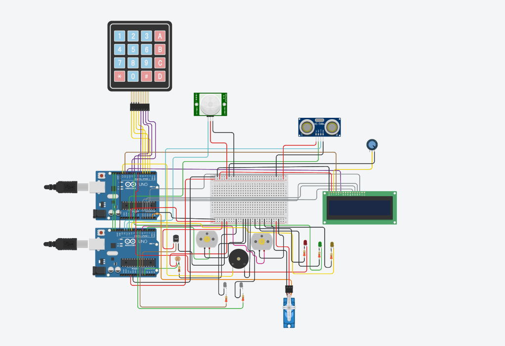
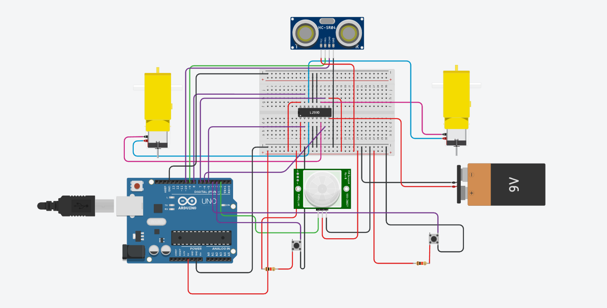
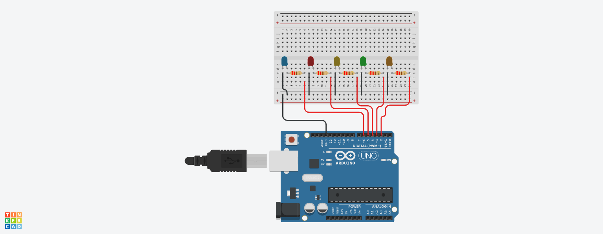
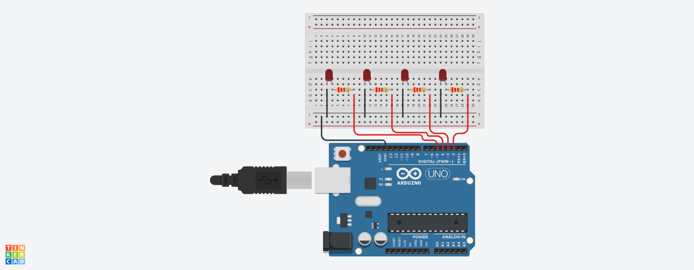
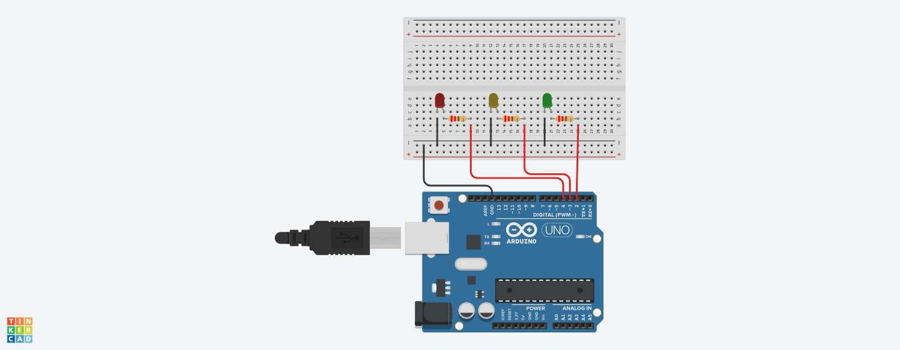
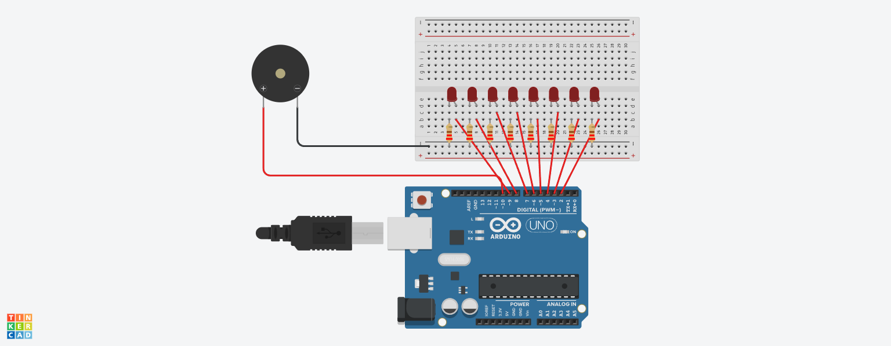

01Click to enlargeADVANCED SYSTEM
Smart Access & Automation System
Integrated Arduino system combining keypad access, sensing, display output, actuator control and multi-module interfacing.
Private project
A focused collection of Arduino and Autodesk Tinkercad work — from digital fundamentals and LED control to sensor-driven systems and integrated project builds.
This portfolio documents a progression through Arduino programming, digital logic, timing, serial input, sound generation, sensor interfacing, PWM motor control and circuit prototyping.
The collection includes two integrated project builds presented as private project showcases, alongside smaller Tinkercad exercises that demonstrate the learning progression clearly.

01Click to enlargeIntegrated Arduino system combining keypad access, sensing, display output, actuator control and multi-module interfacing.

02Click to enlargeArduino motor-control system using ultrasonic and PIR sensing, manual inputs and an L293D driver for responsive movement.

03Click to enlargeSequential LED control using Arduino digital outputs, arrays and timed loops.
Arduino-based traffic signal sequence using red, yellow and green LEDs.

05Click to enlargeFour LEDs display binary values from 0 to 15 using bitwise operations.

06Click to enlargeSerial-command control of red, green and yellow LEDs with input validation.

07Click to enlargeA buzzer plays a programmed melody while LEDs respond to individual notes.
Digital I/O, loops, conditions, arrays and timing.
Breadboard design, rapid prototyping and testing with Autodesk Tinkercad.
Serial input, actuators, PWM and motor control.
Ultrasonic, PIR, servo, LEDs, buzzer and motor interfacing.
Binary representation, bitwise operations and sequential control.
LED sequencing, timing and binary output.
Traffic sequencing, serial input and sound-linked LEDs.
Distance and motion sensing with motor control.
Integrated sensing, access control and actuator systems.
These simulations form a practical electronics foundation for larger embedded, IoT and robotics projects.
Browse the collection